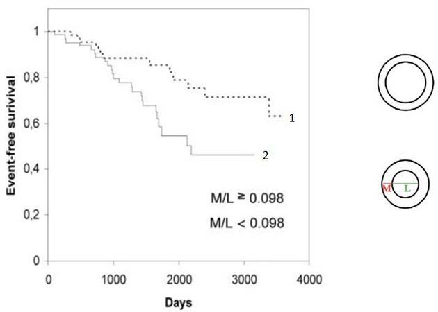
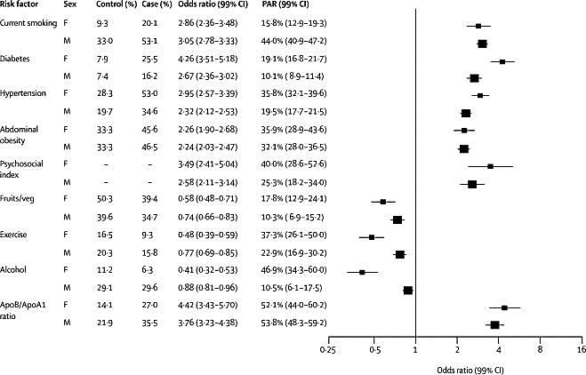
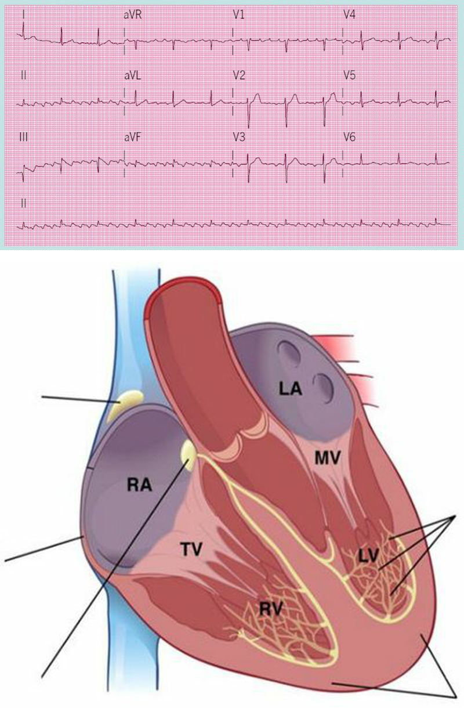
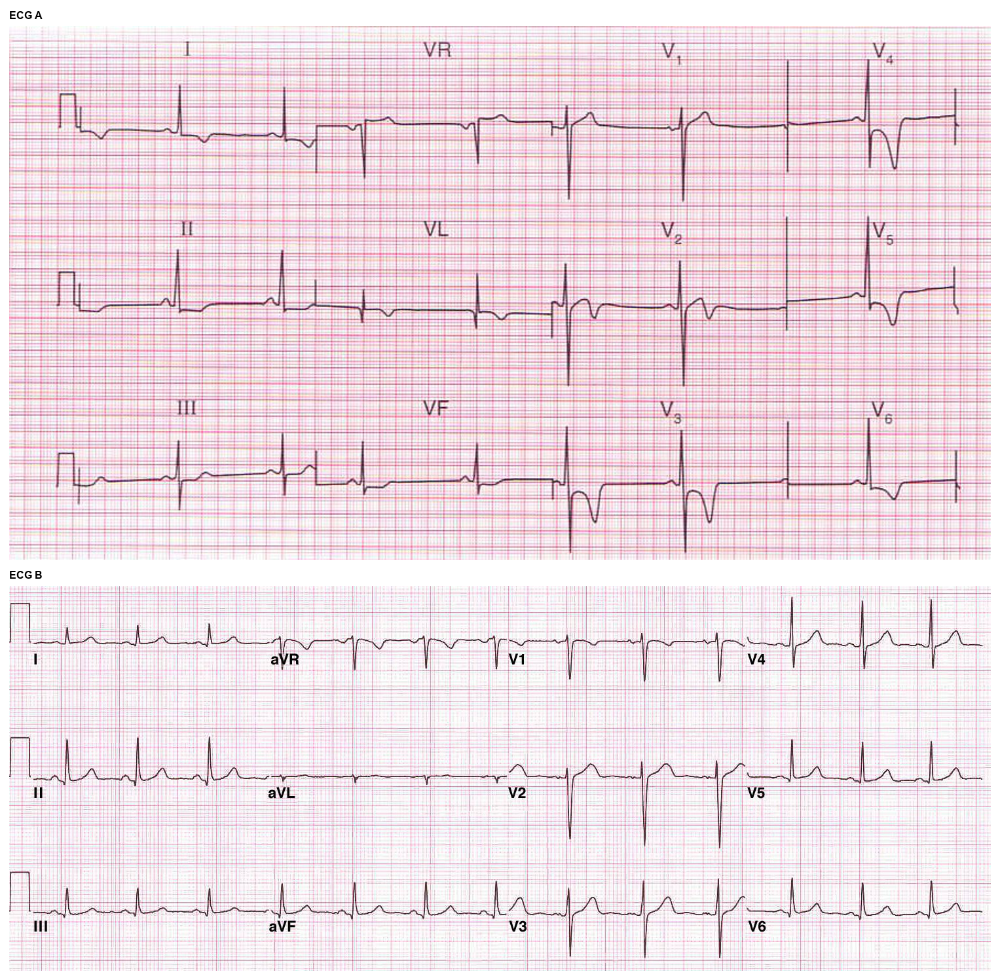
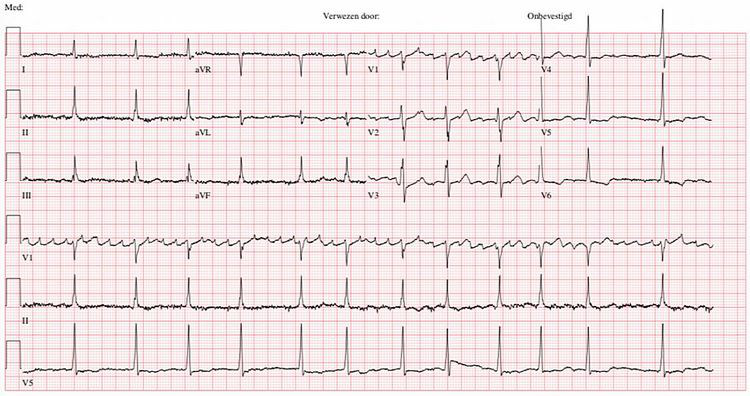
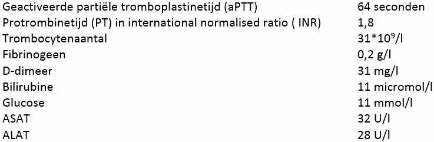
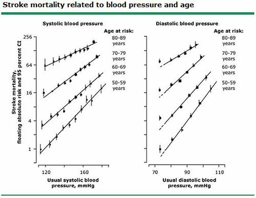
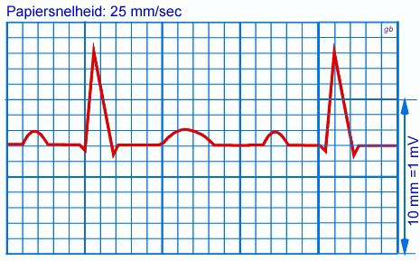

Vraag 1
Je werkt als internist en de ziekenhuisdirectie vraagt je advies te geven over medicijn X. Medicijn X voorkomt hart- en vaatziekten. In de literatuur vind je een RCT met medicijn X vergeleken met een placebo P. De volgende resultaten zijn beschikbaar: 1) medicijn X (n = 2500), aantal mensen met hart- en vaatziekten 50; 2) placebo P (n = 2500), aantal hart- en vaatziekten 100. Hoeveel patiënten moeten worden behandeld (NNT) met medicijn X in vergelijking met placebo P om 1 hart- en vaatziekte te voorkomen? Geef het weer in een getal.
Modelantwoord
50. De NNT = 1 / ARR. ARR (absolute risicoreductie) = 100/2500 − 50/2500 = 0,04 − 0,02 = 0,02. NNT = 1 / 0,02 = 50.
Vraag 2
Kies de juiste alternatieven.
Het acute coronair syndroom (ACS) is de verzamelnaam voor instabiele angina pectoris, NSTEMI en STEMI. Karakteriseer de syndromen. Instabiele angina pectoris: (in rust of recent ontstaan), , . NSTEMI: op de borst (rust of recent ontstaan), aanhoudende ST elevatie, troponines.
Vraag 3
Kies de juiste alternatieven.
De prognose van hartfalen is slecht en er is relatief weinig winst geboekt aangaande mortaliteit over de laatste decaden: 5 jaar na de diagnose van hartfalen is nog % van de totale groep van patiënten in leven.
Vraag 4

Kies de juiste alternatieven.
Bijgaande grafiek geeft de prevalentie van hart- en vaatziekten gedurende 10 jaar weer in een groep patiënten waarbij op t=0 de wanddikte (M) en lumendiameter (L) van weerstandsarteriën uit een biopt werd bepaald. Lijn geeft de prevalentie weer van mensen met een M/L ratio van minder dan 0.098. Hun relatieve risico op een hart- en vaatziekte na 3000 dagen ten opzichte van mensen met een M/L ratio van meer dan 0.098 is ongeveer .
Vraag 5
Welke van onderstaande categorieën aandoeningen is/zijn een mogelijke oorzaak van hartfalen? Kies het volledigste antwoord.
Vraag 6
Analyseer de figuur hierboven, waarin de effecten van verschillende leefstijlfactoren op het risico op een acuut myocardinfarct worden weergegeven voor mannen en vrouwen. Stel dat uw vader niet sport, 1-2 stuks fruit per week eet, een bloeddruk van 155/85 heeft die nog niet wordt behandeld, een waist-hip ratio van 1.1 bij een BMI van 29.0 heeft en elke dag een biertje en een borrel drinkt.
Als u uw vader een leefstijladvies zou mogen geven en hij dat ook opvolgt, met welk advies zou zijn gemiddelde risico op een acuut myocardinfarct het meest afnemen?

Vraag 7
De vorming van een atherosclerotische plaque in de coronaircirculatie tot en met het myocardinfarct kent verschillende stappen. Plaats de onderstaande stappen in de juiste volgorde door hen de nummers 1 t/m 7 toe te kennen.
Sleep een optie naar de bijbehorende rij, of tik eerst op een kaart en dan op een rij.
activering van endotheel
Sleep hier naartoe
begin van oxidering van low density lipoprotein (LDL)
Sleep hier naartoe
infiltratie van macrofagen
Sleep hier naartoe
opname van geoxideerd LDL door macrofagen
Sleep hier naartoe
infiltratie van T-lymfocyten
Sleep hier naartoe
ruptuur van de plaque
Sleep hier naartoe
vorming van een stolsel op de plaque
Sleep hier naartoe
Vraag 8
Welk elektrolyt kan tot gevaarlijke hoogte stijgen als spironolacton wordt toegevoegd aan een angiotensine converting enzyme (ACE)-remmer?
Vraag 9
Welk deel van het ECG is afwijkend bij boezemfibrilleren?
Vraag 10
Welke van de volgende condities veroorzaakt een verhoging van de preload van de linkerventrikel?
Vraag 11
Bewering: Asystolie is de meest voorkomende ritmestoornis die wordt gevonden bij patiënten die overlijden aan een plotse hartdood. Deze bewering is:
Vraag 12
Welk van de onderstaande ziekten acht u het minst waarschijnlijk bij een jonge sporter die getroffen wordt door een plotse hartdood?
Vraag 13
Welke van onderstaande verandering in de atriale cardiomyocyt is NIET karakteristiek voor onbehandelde atriumfibrillatie?
Vraag 14
Patiënten met een toename van de kalkafzettingen uit de vorige vraag hebben een verhoogd risico op: (selecteer er drie)
Meerdere antwoorden mogelijk.
Vraag 15
Waarom is het relevant om onderscheid te maken tussen hartfalen met verminderde ejectiefractie (HFrEF) en hartfalen met behouden ejectiefractie (HFpEF)?
Vraag 16
Beschouw het bovenstaande ECG en het beeld van het geleidingssysteem van het hart. Waar bevindt zich bij deze patiënt waarschijnlijk een stoornis in het geleidingssysteem?

Modelantwoord
De stoornis bevindt zich ter hoogte van de AV-knoop (atrioventriculaire knoop), gelegen in het onderste deel van het rechter atrium nabij de klepring — passend bij een AV-geleidingsstoornis (AV-blok) op het ECG.
Vraag 17
Een KNO-arts vraagt bij een patiënt met een hypofarynxcarcinoom de internist in consult in verband met een plasmanatriumconcentratie van 128 mmol/l. De patiënt is bekend met hypertensie maar gebruikt al twee maanden zijn antihypertensiva (waaronder hydrochloorthiazide) niet meer. Welke twee van onderstaande laboratoriumgegevens zijn nu nodig om tot een juiste oorzaak van de hyponatriëmie te komen?
Meerdere antwoorden mogelijk.
Vraag 18
Een KNO-arts vraagt bij een patiënt met een hypofarynxcarcinoom de internist in consult wegens een plasmanatriumconcentratie van 161 mmol/l. De patiënt is bekend met hypertensie, maar gebruikt al twee maanden zijn antihypertensiva (waaronder hydrochloorthiazide) niet meer.
Welk van onderstaande laboratoriumgegevens geeft nu het meeste richting om achter de oorzaak van de hypernatriëmie te komen?
Welk van onderstaande laboratoriumgegevens geeft nu het meeste richting om achter de oorzaak van de hypernatriëmie te komen?
Vraag 19
Diastolische dysfunctie wordt al vroeg in het ziektebeeld van hypertrofische cardiomyopathie gevonden.
Welke van onderstaande cellulaire veranderingen treedt als eerste op in de pathogenese van diastolische dysfunctie?
Welke van onderstaande cellulaire veranderingen treedt als eerste op in de pathogenese van diastolische dysfunctie?
Vraag 20
Stoffen die de hoeveelheid heat-shock proteins (HSPs) in de cardiomyocyten verhogen beschermen tegen boezemfibrilleren.
Via welk mechanisme doen ze dit?
Via welk mechanisme doen ze dit?
Vraag 21
Een 38-jarige vrouw presenteert zich bij de huisarts met hartkloppingen. Bij het lichamelijk onderzoek wordt een snelle, regelmatige pols vastgesteld. De huisarts heeft tenminste één minuut gevoeld.
Bij welke twee mogelijke diagnosen past deze bevinding het beste?
Meerdere antwoorden mogelijk.
Vraag 22
Waarvoor wordt het acroniem ChadsVasc voor gebruikt?
Vraag 23
Hierboven zien jullie 2 ECG’s (A en B).
Welke past bij een hypertrofische cardiomyopathie (HCM) en waarom?

Vraag 24
Welke van de volgende stellingen met betrekking tot de foetale hemodynamiek is juist?
Vraag 25
Bij auscultatie van het hart en palpatie van de arteria radialis tijdens atriumfibrilleren kunt u bemerken:
Vraag 26
Hierboven ziet u een ECG met boezemfibrilleren, geregistreerd op de gestandaardiseerde manier.
Wat is bij benadering de gemiddelde hartfrequentie van deze persoon in slagen per minuut?
Wat is bij benadering de gemiddelde hartfrequentie van deze persoon in slagen per minuut?

Modelantwoord
Ongeveer 75 slagen per minuut (aanvaardbaar: 70 - 80 slagen per minuut).
Vraag 27
Hypertensie geeft een verhoogd risico op hart- en vaatziekten. De hoogte van dat risico is afhankelijk van de bloeddruk. Welke van de volgende beweringen daarover is juist?
Vraag 28
Welke aangeboren hartafwijking veroorzaakt verlaagde zuurstofspanning in de aorta (centrale cyanose) bij pasgeborenen? Een…
Vraag 29
Beoordeel de onderstaande stelling: Introductie van aspirine als behandeling van ACS resulteerde in ongeveer 50% reductie in sterfte of re-infarct, 1 jaar na het infarct. Deze stelling is:
Vraag 30
Een patiënt ligt in verband met COVID op de intensive care. Hij is ernstig ziek: nier, hart en longen falen tegelijkertijd (multiple organ failure, MOF). Het laboratoriumonderzoek geeft de bovenstaande uitslagen. Deze klinische situatie en uitslagen passen het beste bij:

Vraag 31
Het risico op een herseninfarct (stroke) is onder andere afhankelijk van leeftijd en bloeddruk. Bestudeer onderstaande figuur.
Wie van onderstaande personen heeft het hoogste risico om te overlijden aan een stroke?
Wie van onderstaande personen heeft het hoogste risico om te overlijden aan een stroke?

Vraag 32
Er zijn volgens de European Society of Cardiology (ESC) 5 types cardiomyopathieën (CMP) gebaseerd op "structuur en functie".
Welke van onderstaande CMP'en hoort er niet bij dit classificatiesysteem?
Welke van onderstaande CMP'en hoort er niet bij dit classificatiesysteem?
Vraag 33
Heeft het verlagen van de hartfrequentie met bv. bètablokkers zin bij diastolisch hartfalen?
Vraag 34
Bewering: Coronaire perfusie treedt vooral op in het systolische deel van de hartcyclus. Deze bewering is:
Vraag 35
Bij onderzoek van een zuigeling van 2 maanden valt op dat de liespulsaties minder goed voelbaar zijn dan de pulsaties die aan de rechterarm.
Deze bevinding suggereert:
Deze bevinding suggereert:
Vraag 36
Een man van 80 jaar met een ischemische cardiomyopathie en een linkerventrikel ejectiefractie van 40% komt op je poli. Hij heeft een CRT-D (biventriculaire pacemaker i.c.m. een inwendige defibrillator). Huidige medicamenteuze behandeling: acetylsalicylzuur 1dd80mg, atorvastatine 1dd40mg, pantoprazol 1dd40mg, furosemide 2dd80mg, losartan 1dd50mg (AT2-antagonist), metoprolol 1dd100mg (bèta-blokker). Hij heeft moeite met traplopen, maar bij eenvoudige bezigheden geen klachten. Bloeddruk 100/60 mmHg, hartfrequentie 80/min (regulair). Behoudens een spoortje pitting oedeem bij de enkels geen tekenen van overvulling. ECG: sinusritme, biventriculaire pacing. Lab: hemoglobine 7.5 mmol/l (8.5-11.0), eGFR 30 ml/min/1.73m2 (>60), serum kalium 5.0 mmol/l (3.5-5.0), ferritine 320 microg/L (20-250).
Wat is de beste optie van onderstaande mogelijkheden?
Wat is de beste optie van onderstaande mogelijkheden?
Vraag 37
Een overigens gezonde jonge 36-jarige vrouw komt bij u als sportarts voor een keuring. De bloeddruk is 138/50 mmHg. De pols 92/min. Over het hart hoort u een souffle. U beschrijft deze in de status als volgt: diastolische souffle, hoogfrequent, bandvormig, graad 3 over 6, punctum maximum ter hoogte van de tweede intercostaalruimte rechts.
Bij welke hartklepafwijking past deze souffle het beste?
Bij welke hartklepafwijking past deze souffle het beste?
Vraag 38
ECG - hartfrequentie (papiersnelheid 25 mm/sec). Dit is een ECG met een regulair ritme.
Wat is de hartfrequentie per minuut?
Wat is de hartfrequentie per minuut?

Vraag 39
In een bepaalde groep van patiënten met hartfalen is er een levensverlengend effect aangetoond van een ICD (interne cardiale defibrillator).
Voor welke patiënten met chronisch hartfalen is dit effect aangetoond?
Voor welke patiënten met chronisch hartfalen is dit effect aangetoond?
Vraag 40
Dhr. Oudijk komt bij de interventiecardioloog met atypische thoracale klachten. Op een CTA scan van zijn coronairarteriën is veel kalk in zijn coronairen te zien, en wegens de verminderde beoordeelbaarheid van de CT en de klachten wordt een coronairangiogram gemaakt.
Wanneer is een eventuele revascularisatie (dotter of bypass) gerechtvaardigd?
Wanneer is een eventuele revascularisatie (dotter of bypass) gerechtvaardigd?